토목산업기사 (2002-09-08 기출문제)
1과목: 응용역학
1. 지름이 D = 2m인 원형단면의 극 2차 모멘트는?
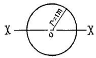
- πm4
- (π/2) m4
- (π/4) m4
- (π/8) m4
(정답률: 알수없음)

2. 폭 16cm, 높이 18cm의 직사각형 단면과 같은 단면계수를 갖기 위해서는 높이를 24cm로 할 때 폭의 크기는 몇 cm 인가?
- 15
- 12
- 9
- 7
(정답률: 알수없음)
3. 도형의 도심을 지나는 축에 대한 단면 1차 모멘트의 값은?
- 0 (zero)이다.
- 0 보다 크다.
- 0 보다 작다.
- 0 보다 클 때도 있고 작을 때도 있다.
(정답률: 알수없음)
4. 지름이 5cm, 길이가 80cm의 둥근막대가 인장력을 받아서 0.5cm 늘어나고 동시에 지름이 0.006cm 만큼 줄었을 때 이 재료의 프와송 수는 얼마인가?
- 3.2
- 4.2
- 5.2
- 6.2
(정답률: 알수없음)
5. 다음 그림과 같은 단순보에 연행하중이 작용할 때 RA가 RB의 3배가 되기 위한 x의 크기는?
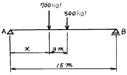
- 1.5 m
- 2.0 m
- 2.5 m
- 3.0 m
(정답률: 알수없음)
6. 다음 그림에서 A점의 휨모멘트는 얼마인가?
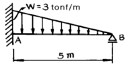
- -9.375 tonf·m
- -4.688 tonf·m
- -5.000 tonf·m
- -5.765 tonf·m
(정답률: 알수없음)
7. 지간 ℓ =12m의 단순보에서 C점의 휨응력은 얼마인가? (단, 자중은 무시한다.)
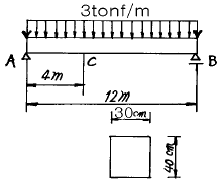
- 600 kgf/cm2
- 675 kgf/cm2
- 700 kgf/cm2
- 775 kgf/cm2
(정답률: 알수없음)
8. 폭 b, 높이 h 단면을 가진 길이ℓ 의 단순보 중간에 집중하중 P가 작용할 때 다음 설명중 옳지 않은 것은? (단, E 는 탄성계수)
- 최대 처짐은 E 에 반비례
- 최대 처짐은 h 의 세제곱에 반비례
- 지점의 처짐각은 ℓ 의 세제곱에 비례
- 지점의 처짐각은 b 에 반비례
(정답률: 알수없음)
9. 다음 그림에서 최대 처짐각비는? (θB : θD)
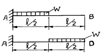
- 1 : 2
- 1 : 3
- 1 : 5
- 1 : 7
(정답률: 알수없음)
10. 다음과 같은 단주에서 편심거리 e에 P=300kgf이 작용할 때 단면에 인장력이 생기지 않기 위한 e의 한계는?
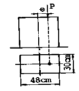
- 4cm
- 6cm
- 8cm
- 10cm
(정답률: 알수없음)
11. 지름이 D인 원형 단면의 기둥에서 핵(Core)의 직경은?
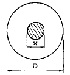
- D/2
- D/3
- D/4
- D/6
(정답률: 알수없음)
12. 그림과 같은 3-Hinge 아치의 수평반력 HA는 몇 tonf인가?
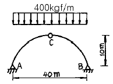
- 6
- 8
- 10
- 12
(정답률: 알수없음)
13. 그림과 같은 트러스에서 U의 부재력은?
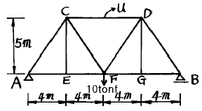
- 6tonf(인장력)
- 8tonf(압축력)
- 6tonf(압축력)
- 8tonf(인장력)
(정답률: 알수없음)
14. 다음 중 부정정 구조의 해법이 아닌 것은?
- 요각법
- 변형일치법
- 공액보법(Conjugate beam method)
- 모멘트 분배법
(정답률: 알수없음)
15. 길이 ℓ인 균일단면 보의 A단에 모멘트 MAB를 가했을 때 A단의 회전각 θA는? (단, 휨 강성은 EI)
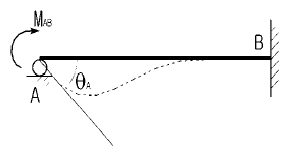
- MABℓ / EＩ
- 4MABℓ / EＩ
- MABℓ / 4EＩ
- MABℓ / 3EＩ
(정답률: 알수없음)
16. 다음 그림과 같은 구조물의 부정정 차수는?
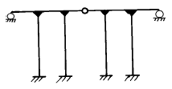
- 9차 부정정
- 10차 부정정
- 11차 부정정
- 12차 부정정
(정답률: 알수없음)
17. 어떤 금속의 탄성계수가 E, 프와송비가 ν일 때 이 금속의 전단 탄성계수 G는 어떻게 표시되는가?
- G = E / 1+ν
- G = E / 1-ν
- G = E / 2(1+ν)
- G = E / 2(1-ν)
(정답률: 알수없음)
18. 다음 그림과 같은 구조물에서 지점 B의 연직반력은? (단, 보 AD는 보 BC 위에 올려 놓은 상태이며 각 보의 EI는 서로 같고 일정하다.)
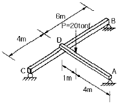
- 8.5 tonf (↑)
- 7.2 tonf (↑)
- 6.4 tonf (↑)
- 4.8 tonf (↑)
(정답률: 알수없음)
19. 다음 그림에서 부재 AB 가 받는 힘은 얼마인가?
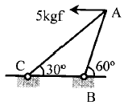
- 3.5 kgf
- 3.75 kgf
- 5.0 kgf
- 6.0 kgf
(정답률: 알수없음)
20. 직사각형 단면 20cm × 30cm을 갖는 양단 고정지점부재의 길이가 L=5m이다. 이 부재에 15℃의 온도상승이 있었다면 이 부재가 받는 힘은 얼마인가? (단, 선팽창계수 α = 0.6 ×10-5, 탄성계수 E = 2.0 × 106 kgf/cm2 이다)
- 10,800kgf(인장)
- 10,800kgf(압축)
- 108,000kgf(인장)
- 108,000kgf(압축)
(정답률: 알수없음)
2과목: 측량학
21. 축척 1/1200 도상면적을 잘못하여 축척 1/1000인 면적으로 계산하여 15,000m2를 얻었다. 실제면적은?
- 15,000m2
- 18,700m2
- 20,700m2
- 21,600m2
(정답률: 알수없음)
22. 편각법에 의하여 원곡선을 설치하고자 한다. 곡선반경이 500m, 시단현이 12.3m 일 때 편각은?
- 36' 27"
- 39' 42"
- 42' 17"
- 43' 43"
(정답률: 알수없음)
23. 트래버스 측선의 방위가 S 75° W, 측선거리 60m 일 때 위거 및 경거는?
- 위거 : - 15.53m , 경거 : - 57.96m
- 위거 : + 57.96m , 경거 : + 15.53m
- 위거 : - 57.96m , 경거 : - 15.53m
- 위거 : + 15.53m , 경거 : + 57.96m
(정답률: 알수없음)
24. 트래버스 측량에서 거리의 총합이 1,250m, 위거오차 -0.12m, 경거오차 +0.23m 일 때 폐합비는?
- 1 / 4810
- 1 / 4370
- 1 / 3970
- 1 / 4970
(정답률: 알수없음)
25. 트래버스 측량에서 시가지나 평탄지의 폐합비 허용 범위는?
- 1/500 ~ 1/1,000
- 1/300 ~ 1/1,000
- 1/1,000 ~ 1/2,000
- 1/5,000 ~ 1/10,000
(정답률: 알수없음)
26. 바닷가에서 해상을 바라볼 수 있는 수평선까지의 거리는? (단, 해면에서의 눈높이 1.5m, R = 6370km, K = 0.14)
- 4.57km
- 4.71km
- 4.62km
- 4.49km
(정답률: 알수없음)
27. 노선선정시 고려해야 할 사항중 적당하지 않은 것은?
- 건설비· 유지비가 적게 드는 노선이어야 한다.
- 절토와 성토의 균형을 이루어 토공량이 적게 한다.
- 어떠한 기존시설물도 이전하여 노선은 직선으로 하여야 한다.
- 가급적 급경사 노선은 피하는 것이 좋다.
(정답률: 알수없음)
28. 캔트(cant)계산에서 속도 및 반경을 모두 2배로 하면 캔트는 몇배로 되는가?
- 1/2배
- 2배
- 4배
- 8배
(정답률: 알수없음)
29. 다음 중 우리나라 도원점(평면직교좌표 원점)에 대한 설명 중 올바른 것은?
- 현재 경기도 수원의 국립지리원 구내에 설치되어 있다.
- 인천항의 평균해수면을 기준으로 하였다.
- 정밀 천문측량에 의해 위치를 결정하였다.
- 북위 38° 와 동경 125° ,127° ,129° 의 교점을 사용하고 있다.
(정답률: 알수없음)
30. 시거정수를 결정하기 위하여 운동장에 트랜싯을 세운 후 50m 지점에 세운 표척의 협거를 읽은 값이 0.365m, 100m 지점에 세운 표척의 협거를 읽은 값이 0.845m 일 때 이 트랜싯의 시거정수는? (순서대로 K, C)
- 100.17, 15.98
- 102.17, 13.98
- 104.17, 11.98
- 106.17, 9.98
(정답률: 알수없음)
31. 다음 설명 중 옳은 설명은?
- 측량에 의해 참값을 구하기 위해서는 30회 정도 반복측량하여 산술평균한다.
- 정확도는 관측값들 간의 접근도, 일치도를 나타내는 척도이다.
- 관측값에서 정오차와 부정오차를 제거하면 최확값을 구할 수 있다.
- 우연오차는 부정오차를 말하는 것이며 상쇄오차라고도 말한다.
(정답률: 알수없음)
32. 초점거리가 150㎜인 사진기로 촬영고도 2000m에서 촬영할 경우 예상되는 평면위치 오차 한계는?
- 0.1 ~ 0.4m
- 0.5 ~ 0.9m
- 0.9 ~ 1.4m
- 1.5 ~ 2.0m
(정답률: 알수없음)
33. 다음 삼각망의 구성에 대한 설명중 잘못된 것은?
- 지역전체를 고른 밀도로 덮는다.
- 기선의 확대회수는 3∼4회로 한다.
- 삼각형은 가능한 정삼각형에 가깝게 한다.
- 변길이 오차의 누적을 피하기 위해 검기선을 설치한다.
(정답률: 알수없음)
34. 하천이나 항만의 심천 측량을 할 때 배위에서 육지에 있는 목표를 시준하여 배위치를 구할 때 사용되는 기계는?
- 육분의
- 전경의(Transit)
- 수준의(Level)
- 평균의(평판)
(정답률: 알수없음)
35. 수준측량에서 전시와 후시의 거리를 같게 하여도 제거되지 않는 오차는?
- 시준선과 기포관축이 평행하지 않을 때 생기는 오차
- 지구곡률 오차
- 광선의 굴절오차
- 표척 눈금의 읽음오차
(정답률: 알수없음)
36. 양변이 80m와 100m이고 그에 낀 각이 60° 인 삼각형의 면적은?
- 2464m2
- 3464m2
- 4464m2
- 5464m2
(정답률: 알수없음)
37. 곡선 설치에서 교각이 32° 15' 이고 곡선반경이 500 m일 때 곡선시점의 추가거리가 315.45m 이면 곡선종점의 추가거리는?
- 593.88 m
- 596.88 m
- 623.63 m
- 625.36 m
(정답률: 알수없음)
38. 지상고도 2000m의 비행기 위에서 초점거리 152.7㎜의 사진기로 촬영한 수직항공 사진에서 길이 50m인 교량의 사진상의 길이는?
- 0.26㎜
- 3.8㎜
- 2.6㎜
- 0.38㎜
(정답률: 알수없음)
39. 다음 그림과 같은 표고를 갖는 지형을 평탄하게 정지작업을 하면 이 지역의 평균표고는 얼마인가? (단, 단위는 m임)
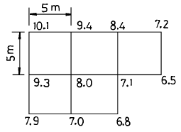
- 7.973m
- 8.000m
- 8.027m
- 8.104m
(정답률: 알수없음)
40. 1/50,000 지형도상에서 A점으로부터 B점까지의 도상거리가 70mm이었다. A점 표고가 200m, B점이 10m라 할때 이 사면의 경사는?
- 1/18.4
- 1/20.5
- 1/22.3
- 1/25.1
(정답률: 알수없음)
3과목: 수리학
41. 어떤 지역에 내린 강우의 시간적 분포는 다음 우량주상도와 같다. 총강우량이 75mm를 기록하였을 때 이 유역의 출구에서 측정한 지표유출량이 33mm였다면 ø -index는?
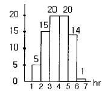
- 6 mm/hr
- 7 mm/hr
- 8 mm/hr
- 9 mm/hr
(정답률: 알수없음)
42. 물의 점성계수의 단위는 g/㎝· sec이다. 동점성 계수의 단위는?
- ㎝3/sec
- ㎝/sec2
- sec/㎝2
- ㎝2/sec
(정답률: 알수없음)
43. 다음 그림에서 치폴레티 위어(Cippoletti weir)란 어떤 경우를 말하는가?
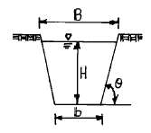
- tanθ = 4 인 경우
- tanθ = 1 / √2 인 경우
- tanθ = 1 / √3 인 경우
- tanθ = 1 / 4 인 경우
(정답률: 알수없음)
44. 강우강도와 지속기간 사이의 관계에서 Sherman형으로 표시된 식은?
- I = a / t+b
- I = c / tn
- I = d / √t + e
- I = R24/24 (24/t)
(정답률: 알수없음)
45. 원통형의 용기에 깊이 1.5m 까지는 비중이 1.35인 액체를 넣고 그 위에는 2.5m 까지의 깊이로 비중 0.95인 액체를 넣었을 때의 밑바닥이 받는 총압력은? (단, 밑바닥의 직경은 2m 이다)
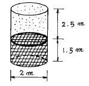
- 12.823 t
- 13.823 t
- 14.823 t
- 15.823 t
(정답률: 알수없음)
46. 다음의 면적 40m2인 여과지에서 투수계수 K = 0.20㎝/sec일때 여과 수량은?
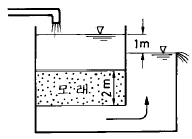
- 0.2m3/sec
- 0.4m3/sec
- 0.04m3/sec
- 4m3/sec
(정답률: 알수없음)
47. 폭이 4m이고,깊이가 2m인 구형단면(矩形斷面)수로에 있어서 수리반경(水理半徑)은 얼마인가?
- 1m
- 2m
- 1.33m
- 4m
(정답률: 알수없음)
48. 다음 중 듀피트(Dupit)의 침윤선 공식은? (단, ｑ : 단위폭당 유량, ℓ : 침윤거리, h1,h2 : 상하류의 수심, ｋ : 투수계수)
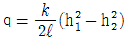
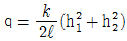
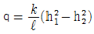
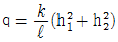
(정답률: 알수없음)
49. 두 개의 평행한 평판 사이에 유체가 흐르고 있다. 전단응력은?
- 전 단면에 걸쳐 일정하다.
- 벽면에서는 0이고, 중심까지 직선적으로 변화한다.
- 포물선분포의 형상을 갖는다.
- 중심에서는 0이고, 중심으로부터의 거리에 비례하여 증가한다.
(정답률: 알수없음)
50. 2m × 2m × 2m인 고가수조에 관로를 통해 유입되는 물의 유입량이 0.15ℓ /sec 일 때 만수가 되기까지 걸리는 시간은 얼마인가 ? (단, 현재 고가수조의 수심은 0.5m이다.)
- 5hr 20min
- 8hr 22min
- 10hr 5min
- 11hr 7min
(정답률: 알수없음)
51. 다음의 부체에 관한 설명 중 틀린 것은?
- 부체는 부력 B와 부체의 중심에 작용하는 무게 W가 동일연직선상에 올 때 정지한다.
- 중심 G가 부심 C보다 아래쪽에 있을 경우 안정하다.
- 경심 M이 G보다 낮은 곳에 있을 경우 안정하다.
- 경심 M이 G보다 높은 곳에 있을 경우 복원 모멘트가 발생된다.
(정답률: 알수없음)
52. 다음 중 대기의 성질을 지배하는 요소와 가장 거리가 먼 것은?
- 기압
- 기온
- 습도
- 강수
(정답률: 55%)
53. 다음 중 단위중량(비중량)의 절대단위계 차원은 어느 것인가?
- [ML-3]
- [FL-1T-1]
- [ML-2T-2]
- [FL-3]
(정답률: 알수없음)
54. 그림과 같이 내경이 60㎜,수압이 3.0㎏/㎝2의 호스에 직경 20㎜의 노즐을 붙였다. 이때 유속계수 Cv = 0.98이라 하면 노즐로부터 분류하는 실제 유속은?
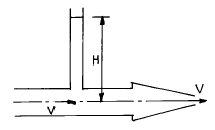
- 24.90m/sec
- 23.90m/sec
- 25.90m/sec
- 22.90m/sec
(정답률: 알수없음)
55. 질량 m인 유체가 유속 v1에서 v2로 변하는데 시간 Δt가 소요된다면 이 경우의 운동량 방정식을 바르게 표시한 것은?
- F(t1 - t2) = m(v1 - v2)
- F · Δt = m(v1 - v2)
- F · Δt = m(v2 - v1)
- F · Δt = (v2 - v1)/m
(정답률: 알수없음)
56. 어떤 물체의 무게가 공기중에서 20㎏,수중에서는 15㎏이라면 이 물체의 비중과 체적은?
- S = 1.3, V = 0.015m3
- S = 4.0, V = 0.0⑤m3
- S = 1.0, V = 0.020m3
- S = 0.6, V = 0.035m3
(정답률: 17%)
57. 다음 중 홍수피해에 가장 직접적인 영향을 미치는 유출형태는?
- 기저 유출
- 지하수 유출
- 지표면 유출
- 지표하 유출
(정답률: 알수없음)
58. 수면과 연직한 평면에 작용하는 전수압의 작용점 위치에 관한 설명 중 옳은 것은?
- 전수압의 작용점은 항상 도심보다 위에 있다.
- 전수압의 작용점은 항상 도심보다 아래에 있다.
- 전수압의 작용점은 항상 도심과 일치한다.
- 전수압의 작용점은 도심위에 있을때도 있고 아래에 있을 때도 있다.
(정답률: 알수없음)
59. 한계 프르우드 수(Froude number)를 사용하여 구분할 수 있는 흐름은 어느 것인가?
- 등류와 부등류
- 정류와 부정류
- 층류와 난류
- 상류와 사류
(정답률: 알수없음)
60. Darcy-Weisbach의 마찰손실법칙으로 틀린 것은?
- 관로의 길이에 비례한다.
- 관의 조도에 비례한다.
- 유속의 제곱에 비례한다.
- 관의 직경에 비례한다.
(정답률: 알수없음)
4과목: 철근콘크리트 및 강구조
61. 압축철근비(ρ')가 0.01인 철근콘크리트보의 장기처짐계수 λ의 값은 얼마인가? (단, 하중재하기간은 1년이다.)
- 0.80
- 0.933
- 2.80
- 1.333
(정답률: 알수없음)
62. bw=30cm, d=60cm, As=15cm2인 단철근 직사각형 단면의 설계휨강도(φMn)는 얼마인가? (단, fck = 280 kgf/cm2, fy = 3,000 kgf/cm2)
- 11.74 tonf·m
- 21.74 tonf·m
- 31.74 tonf·m
- 41.74 tonf·m
(정답률: 알수없음)
63. 프리스트레스 콘크리트를 설명할 수 있는 기본개념이 아닌 것은?
- 응력 개념
- 강도 개념
- 하중 개념
- 가상일 개념
(정답률: 알수없음)
64. 옹벽설계시의 안정 조건이 아닌 것은?
- 전도에 대한 안정
- 마찰력에 대한 안정
- 활동에 대한 안정
- 지반 지지력에 대한 안정
(정답률: 알수없음)
65. 철근콘크리트 단순보는 설계하중 하에서 지점부근에 균열이 발생하기 쉽다. 이러한 균열을 제어하기 위한 가장 효과적인 방법은?
- 스터럽을 적절하게 배근한다.
- 상단에 주근을 배근한다.
- 하단에 주근을 배근한다.
- 상.하단에 주근을 배근한다.
(정답률: 알수없음)
66. 다음 그림과 같은 경간 ℓ = 12 m인 연속 T형 보에서 대칭부의 플랜지 유효 폭은?
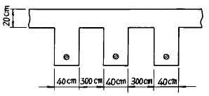
- 360 cm
- 340 cm
- 320 cm
- 300 cm
(정답률: 알수없음)
67. 철근 콘크리트 보에서 스터럽을 배치하는 주목적은?
- 보의 강성을 높이고 사인장 응력을 받게 하기 위하여
- 휨인장응력에 저항하게 하기 위하여
- 보의 처짐을 감소시키기 위하여
- 콘크리트의 균열폭을 감소시키기 위하여
(정답률: 알수없음)
68. fck = 240kgf/cm2, fy = 3000kgf/cm2일 때 다음 그림과 같은 보의 균형 철근비(ρb)는?
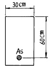
- 0.0013
- 0.0129
- 0.0385
- 0.0488
(정답률: 알수없음)
69. 강도설계법에서 전단과 휨만을 받는 부재에 콘크리트가 부담하는 공칭전단 강도(Vc)는 얼마인가? (단, fck = 210㎏f/㎝2, fy = 3,000㎏f/㎝2, bw = 30㎝, d = 50㎝이다.)
- 11.5tonf
- 3.5tonf
- 15tonf
- 9.5tonf
(정답률: 알수없음)
70. 다음의 프리스트레스 손실원인 중 시간적 손실(장기 손실)에 해당하지 않는 것은?
- 정착장치의 활동
- PS 강재의 릴렉세이션
- 콘크리트 크리프
- 콘크리트 건조수축
(정답률: 알수없음)
71. 뒷부벽식 옹벽의 설계에서 뒷부벽은 어떤 보로 하는가?
- T형보
- 단순보
- 직사각형보
- 연속보
(정답률: 알수없음)
72. b = 30 cm, h = 60 cm, d = 54 cm, As = 4-D25 = 20.67cm2인 직사각형 단면보는 어떤 파괴형태를 보이는가? (단, fck=280kgf/cm2, fy=4200kgf/cm2)
- 취성 파괴
- 연성 파괴
- 균형 파괴
- 파괴되지 않는다.
(정답률: 알수없음)
73. 판형에서 복부판의 최대 전단력 V = 80 tonf 이 작용할 때 전단응력은? (단, 복부판의 순단면적 Awn=90cm2, 복부판의 총 단면적 Awg= 120cm2이다.)
- 671.7 kgf／cm2
- 666.7 kgf／cm2
- 657.3 kgf／cm2
- 888.9 kgf／cm2
(정답률: 알수없음)
74. 단철근 직사각형 단면의 균형 철근비(ρb)를 이용하여 균형 철근량을 구하는 식은 어느 것인가? (단, b = 폭, d = 유효깊이)
- As = ρbbd
- As = ρb / bd
- As = ρb / b-d
- As = ρb-b / d
(정답률: 알수없음)
75. PS 강재의 인장응력 fp = 10,000kgf/cm2, 콘크리트의 압축응력 fc = 50kgf/cm2, 콘크리트의 크리프계수 φ = 2.0, n =5 일때 크리프에 의한 PS 강재 인장응력의 손실량은?
- 500 kgf/cm2
- 550 kgf/cm2
- 600 kgf/cm2
- 650 kgf/cm2
(정답률: 알수없음)
76. 어떤 강교의 교량 지간이 12m 일때 충격 계수는?
- 0.25
- 0.27
- 0.29
- 0.31
(정답률: 알수없음)
77. 휨모멘트가 18tonf·m일 때 I형강(形鋼)의 결정단면으로 다음 어느 것이 가장 적절한가? (단, fca=1,200kgf/cm2)
- 치수 350 × 150 × 9, 단면계수 871cm2
- 치수 350 × 150 × 12, 단면계수 1,208cm2
- 치수 400 × 150 × 10, 단면계수 1,200cm2
- 치수 400 × 150 × 12.5, 단면계수 1,580cm2
(정답률: 알수없음)
78. 콘크리트의 압축강도가 600㎏f/㎝2인 고강도콘크리트를 사용한다면 탄성계수 Ec는 대략 얼마인가 ? (단, 보통골재를 사용한 단위중량 2.3tonf/m3의 콘크리트임)
- 257,200㎏f/㎝2
- 327,200㎏f/㎝2
- 283,400㎏f/㎝2
- 367,400㎏f/㎝2
(정답률: 알수없음)
79. fck=240kgf/cm2, fy=4,000kgf/cm2으로 된 부재에 인장을 받는 표준갈고리를 둔다면 기본정착길이는 얼마인가? (단, 철근의 공칭지름은 2.54cm(D25)인 경우이다.)
- 50cm
- 49cm
- 45cm
- 41cm
(정답률: 알수없음)
80. 강도설계법에서 fck = 300kgf/cm2일 때 등가높이 a=β1.c 중에서 β1의 값은 어느 것인가?
- 0.836
- 0.85
- 0.822
- 0.864
(정답률: 알수없음)
5과목: 토질 및 기초
81. 어떤 유선망도에서 상하류의 수두차가 4m, 투수계수가 2 × 10-3cm/sec, 등수두면의 수가 9개, 유로의 수가 6개일 때 단위폭 1m당 1시간 침투유량은 얼마인가?
- 0.144 m3/hr
- 0.192 m3/hr
- 0.384 m3/hr
- 0.248 m3/hr
(정답률: 알수없음)
82. 점착력이 0.8t/m2,단위중량이 1.6t/m3,내부마찰각이 30°인 흙에 있어서 점착고(粘着高)는?(오류 신고가 접수된 문제입니다. 반드시 정답과 해설을 확인하시기 바랍니다.)
- 0.58m
- 1.73m
- 2.02m
- 3.46m
(정답률: 알수없음)
83. 모래질 지반에 30㎝ × 30㎝ 크기로 재하시험을 한 결과 20t/m2의 극한지지력을 얻었다. 3m × 3m의 기초를 설치할 때 기대되는 극한 지지력은?
- 100 t/m2
- 150 t/m2
- 200 t/m2
- 300 t/m2
(정답률: 알수없음)
84. 점토지반에 제방을 쌓을 경우 초기 안정해석을 위한 흙의 전단강도를 측정하는 방법은?
- UU-test
- CU-test
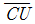
-test- CD-test
(정답률: 알수없음)
85. 예민비가 큰 점토란?
- 입자모양이 둥근 점토
- 흙을 다시 이겼을때 강도가 증가하는 점토
- 입자가 가늘고 긴 형태의 점토
- 흙을 다시 이겼을때 강도가 감소하는 점토
(정답률: 알수없음)
86. 점토의 자연 시료에 대한 일축압축 강도가 3.6㎏/㎝2이고, 이 흙을 되비볐을 때의 파괴압축 응력이 1.2㎏/㎝2 이었다. 이 흙의 점착력(C)과 예민비(St)는 얼마인가?
- C = 1.8㎏/㎝2, St = 3
- C = 1.8㎏/㎝2, St = 2
- C = 2.4㎏/㎝2, St = 3
- C = 2.4㎏/㎝2, St = 2
(정답률: 알수없음)
87. 투수계수에 영향을 미치는 인자가 아닌 것은?
- 물의 점성
- 흙의 비중
- 흙의 공극비
- 흙의 입경
(정답률: 알수없음)
88. 크기가 1.5m × 1.5m 인 정방형 직접기초가 있다. 근입깊이 가 1.0m 일 때, 기초저면의 허용지지력을 테르자기(Terzaghi)방법에 의하여 구하면? (단, 기초지반의 점착력은 1.5t/m2, 단위중량은 1.8 t/m3, 마찰각은 20° 이고 이 때의 지지력 계수는 Nc=17.69, Nq=7.44, Nr=3.64 이며, 허용지지력에 대한 안전율은 4.0으로 한다.)
- 약 13t/m2
- 약 14t/m2
- 약 15t/m2
- 약 16t/m2
(정답률: 알수없음)
89. 흙의 다짐시험에서 다짐에너지를 증가시킬 때 일어나는 결과는?
- 최적함수비와 최대건조밀도가 모두 증가한다.
- 최적함수비와 최대건조밀도가 모두 감소한다.
- 최적함수비는 증가하고 최대건조밀도는 감소한다.
- 최적함수비는 감소하고 최대건조밀도는 증가한다.
(정답률: 알수없음)
90. 어떤 점토층이 어느 압밀도에 달할 때까지의 소요시간을 양면배수라고 생각하여 계산할 때 5년이라고 하면, 일면배수라고 생각할 때는 몇년인가?
- 10 년
- 20 년
- 30 년
- 40 년
(정답률: 알수없음)
91. 지하수위가 지표면과 일치되며 내부마찰각이 30° , 포화밀도가 2.0t/m3인 비 점성토로 된 반무한사면이 15° 로 경사져 있다. 이때 이 사면의 안전율은?
- 1.00
- 1.08
- 2.00
- 2.15
(정답률: 알수없음)
92. CBR 시험에서 피스톤 2.5mm 관입될 때와 5mm관입될 때를 비교한 결과 5mm 값이 더 크게 나타났다. 어떻게 하여 CBR 값을 결정하는가?
- 그대로 5mm 값을 CBR 값으로 한다.
- 2.5mm값과 5mm값의 평균값을 CBR값으로 한다.
- 5mm 값을 무시하고 2.5mm값을 표준으로 하여 CBR값으로 한다.
- 되풀이 시험해서 그래서 5mm 값이 크게 나오면 그대로 5mm값을 CBR값으로 한다.
(정답률: 알수없음)
93. 점성토의 전단특성에 관한 설명 중 옳지 않은 것은?
- 일축압축시험시 peak점이 생기지 않을 경우는 변형률 15%일 때를 기준으로 한다.
- 재 성형한 시료를 함수비의 변화없이 그대로 방치하면 시간이 경과 되면서 강도가 일부 회복하는 현상을 액상화 현상이라 한다.
- 전단조건(압밀상태, 배수조건 등)에 따라 강도 정수가 달라진다.
- 포화점토에 있어서 비압밀 비배수 시험의 결과 전단강도는 구속압력의 크기에 관계없이 일정하다.
(정답률: 알수없음)
94. 다음중 동상을 발생시키는 주요요소가 아닌 것은?
- 온도
- 지하수의 유무
- 흙의 입경
- 흙의 마찰각
(정답률: 알수없음)
95. 말뚝기초의 지지력에 관한 설명으로 틀린 것은?
- 부의 마찰력은 아래 방향으로 작용한다.
- 효율을 이용해서 군항의 지지력을 구하는 경우는 마찰말뚝인 경우이다.
- 점성토 지반에는 동역학적 지지력 공식이 잘 맞는다.
- 재하시험 결과를 이용하는 것이 신뢰도가 큰 편이다.
(정답률: 알수없음)
96. 10m × 10m의 정사각형 기초위에 6t/m2의 등분포하중이 작용하는 경우 지표면 아래 10m에서의 수직응력을 2 : 1법으로 구한 값은?
- 1.2t/m2
- 1.5t/m2
- 1.88t/m2
- 2.11t/m2
(정답률: 알수없음)
97. 어느 흙의 지하수면 아래의 흙의 단위중량이 1.94g/cm3이었다. 이 흙의 공극비가 0.84 일 때 이 흙의 비중을 구하면?
- 1.65
- 2.65
- 2.73
- 3.73
(정답률: 알수없음)
98. 접지압의 분포가 기초의 중앙부분에 최대응력이 발생하는 기초형식과 지반은 어느 것인가?
- 연성기초이고 점성지반
- 연성기초이고 사질지반
- 강성기초이고 점성지반
- 강성기초이고 사질지반
(정답률: 알수없음)
99. 다음 토질 시험중 도로의 포장 두께를 정하는데 많이 사용되는 것은?
- 표준관입시험
- C.B.R 시험
- 삼축압축시험
- 표준다짐시험
(정답률: 알수없음)
100. 선단에 요동(搖動)장치가 부착된 케이싱 튜브를 압입시켜 관입하고 케이싱(casing)내부의 흙을 해머 그래브(hammergrab)로 굴착하여 소정의 지지 지반까지 구멍을 판 후 이수(泥水)를 펌핑하고 철근을 조립하여 콘크리트를 치면서 케이싱 튜브를 빼내 원형의 주상(柱狀)기초를 만드는 공법을 무엇이라 하는가?
- 베노토(Benoto)공법
- 역순환(RCD)공법
- ICOS 공법
- 시카고(Chicago)공법
(정답률: 알수없음)
6과목: 상하수도공학
101. 처리수량이 5,000m3/day인 정수장에서 8mg/ℓ 의 농도로 염소를 주입하였다. 잔류염소농도가 0.3mg/ℓ 였다면 염소요구량은? (단, 염소의 순도는 75%이다.)
- 38.5(kg/day)
- 51.3(kg/day)
- 53.3(kg/day)
- 100(kg/day)
(정답률: 알수없음)
102. 슬러지 용적지수(SVI)에 대한 다음 설명중 맞는 것은?
- 침전슬러지량 1000㎖ 중에 포함되는 MLSS를 그램수로 나타낸 것이다.
- 슬러지의 벌킹(sludge bulking)여부를 확인하는 지표로 사용된다.
- 수치가 클수록 침전성이 양호한 것이다.
- SVI가 200 이상일 때 침전성은 양호하다.
(정답률: 알수없음)
103. 유수지(우수조정지)설치 계획에 관한 설명중 틀린 것은?
- 하류관거의 유하능력이 부족한 곳
- 입구와 출구가 자연유하식으로 경제적인 곳
- 펌프 압송식일 경우 펌프장의 침수우려가 적은 곳
- 유수지의 구조는 댐식인 경우 15m이상으로 안전하게 한다.
(정답률: 알수없음)
104. 다음은 급수용 저수지의 유효저수량을 결정하기 위한 Ripple 곡선이다. 저수지의 수위가 가장 높아지는때는 어느 시점인가?
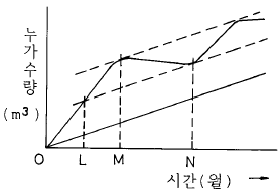
- O 시점
- L 시점
- M 시점
- N 시점
(정답률: 알수없음)
1⑤. 다음은 정수장시설의 착수정에 관한 설명이다. 틀린 것은?
- 2이상으로 분할하는 것이 원칙이다.
- 체류시간은 1.5분 이상으로 한다.
- 수심은 3~5m 정도로 한다.
- 고수위와 주변벽체 상단간에는 30cm 이상의 여유고를 두어야 한다.
(정답률: 알수없음)
106. 하수종말처리장에서 발생한 슬러지는 그 처리처분을 간편하게 하기 위해서 농축처리한다. 수분 98%인 슬러지 30m3을 농축하여 수분 94% 로 했을 때의 슬러지량은 얼마나 되겠는가?
- 10 m3
- 12 m3
- 15 m3
- 18 m3
(정답률: 알수없음)
107. 수위의 변화가 심한 하천이나 호소에서 취수가 요구될 때 사용되는 취수방법은?
- 취수틀에 의한 방법
- 취수문에 의한 방법
- 취수탑에 의한 방법
- 취수관거에 의한 방법
(정답률: 알수없음)
108. 양수량 14m3/min, 전양정 10m, 회전수 1,160rpm인 펌프의 비교회전도는?
- 752 (rpm)
- 762 (rpm)
- 772 (rpm)
- 782 (rpm)
(정답률: 알수없음)
109. 하수의 배제 방법 중에서 분류식에 대한 사항은 어느 것인가?
- 홍수시 하수가 미처리 된 채 방류될 수 있다.
- 처리장에 유입되는 하수량의 변화가 적다.
- 처리장에 유입되는 부하 농도가 작아진다.
- 도시보다는 농촌에서 주로 채택하는 방법이다.
(정답률: 알수없음)
110. 다음 급수인구 추정방법들에 대한 설명중 틀린 것은?
- 등차급수법은 인구증가수가 일정한 지역에 적용하며 계산결과는 과소한 경향이 있다.
- 등비급수법은 과거인구의 년평균 증가율을 일정한 것으로 보며 추정결과는 과대한 경향이 있다.
- 로지스틱 곡선법에서는 포화인구(K)를 먼저 추정하여야 한다.
- 등차급수법은 년평균 증가율이 큰 도시에 적합하며 그 결과는 과대한 경향이 있다.
(정답률: 알수없음)
111. 다음 역사이폰의 설계시 주의할 사항중 적합치 않은 것은?
- 역사이폰의 관내유속은 상류측 관거의 유속보다 20~30% 증가시킨다.
- 역사이폰의 입구와 출구형상은 손실수두와 관계가 없으므로 어떤 형상으로 해도 좋다.
- 역사이폰관은 일반적으로 복수관으로 한다.
- 수조의 깊이가 5m 이상일 때는 중간단에 배수펌프설치대를 장치한다.
(정답률: 알수없음)
112. 하수처리장의 1차 처리시설인 침전지에서 BOD 부하의 30%가 처리되고, 2차 처리시설에서 BOD 부하의 90%가 처리된다면 전체 BOD 제거율은?
- 85%
- 89%
- 93%
- 97%
(정답률: 알수없음)
113. 하수도계획의 목표년도는 원칙적으로 몇 년후로 하는가?
- 10
- 20
- 30
- 40
(정답률: 알수없음)
114. 유출계수 0.8, 강우강도 80mm/hr, 유역면적 5km2인 지역의 우수량을 합리식으로 계산하면?
- 0.89m3/sec
- 8.9m3/sec
- 88.9m3/sec
- 888.9m3/sec
(정답률: 알수없음)
115. 탁질을 제거하기 위한 응집제로서 정수처리 공정에서 사용되지 않는 약품은?
- PAC(폴리염화알미늄)
- 황산반토
- 황산철
- 활성탄
(정답률: 알수없음)
116. 정수시설의 계획 정수량은 무엇을 기준으로 하여야 하는가?
- 계획 1일 최대급수량
- 계획 1일 평균급수량
- 계획 시간 평균급수량
- 계획 취수량
(정답률: 알수없음)
117. 전체 구역에서 발생하는 하수를 특정장소로 집중시키고자 한다. 구역내 지형구조가 한 방향으로 일정한 경사를 이루고 있을 때, 이용할 수 있는 하수배제 방식은?
- 선형식
- 차집식
- 직교식
- 방사식
(정답률: 알수없음)
118. 계획급수량 산정시 사용되지 않는 항목은?
- 급수구역 내 계획인구
- 계획 1인1일급수량
- 계획 급수보급율
- 계획년에서의 누수율
(정답률: 알수없음)
119. 다음 하수도의 구성에 대한 설명중 맞는 것은?
- 하수의 집수시설에서 펌프시설은 필요없다.
- 하수처리 시설은 생물학적 처리 공정시설만을 의미한다.
- 하수배제 방식은 합류식과 분류식으로 대별할 수 있다.
- 배수계통 형식 중 방사식이 가장 좋다.
(정답률: 알수없음)
120. 수격현상(water hammer)의 방지책이 아닌 것은?
- 관내 유속을 증가시킨다.
- 펌프의 급정지를 피한다.
- 펌프에 플라이휠을 부착한다.
- 압력조정수조를 설치한다.
(정답률: 알수없음)
I = (π/4) * D^4
여기서 D는 지름을 의미합니다. 따라서 D = 2m 이므로,
I = (π/4) * (2m)^4
= (π/4) * 16m^4
= (π/2) m^4
따라서 정답은 "(π/2) m^4" 입니다.